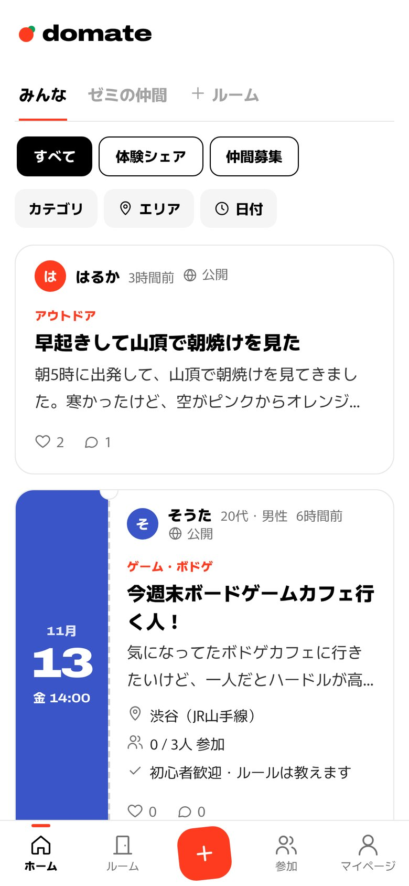
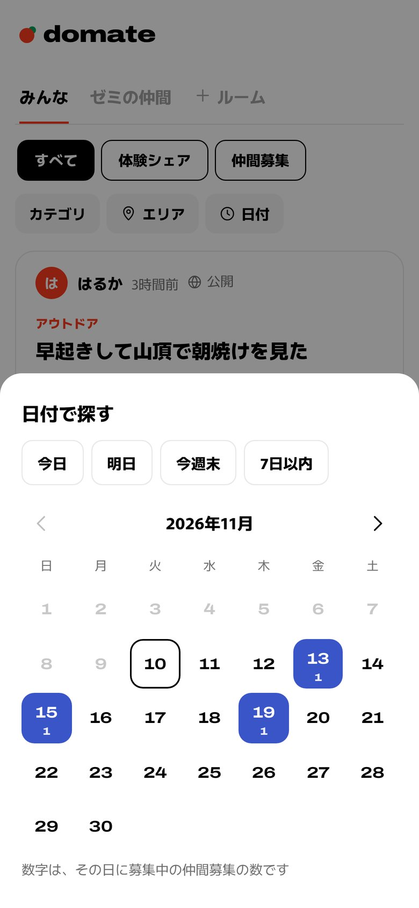
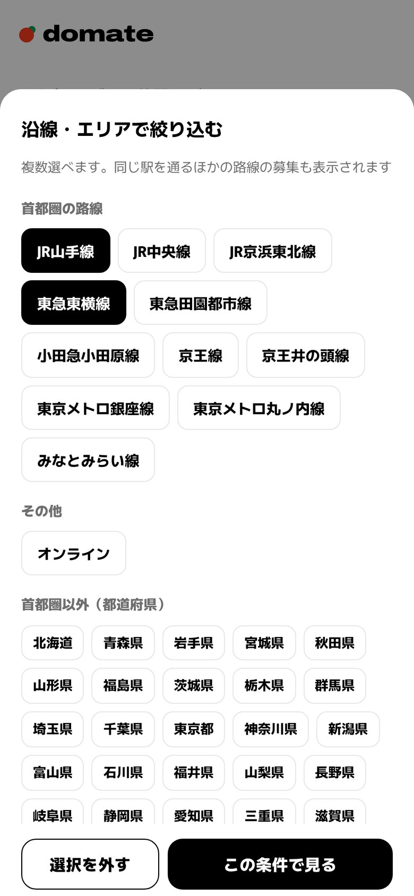
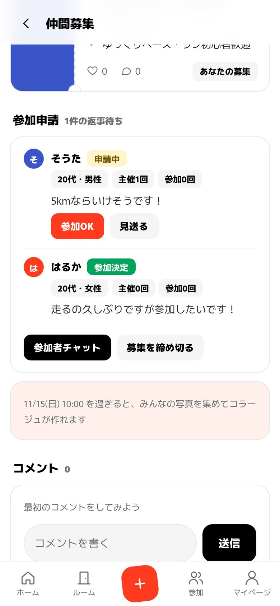
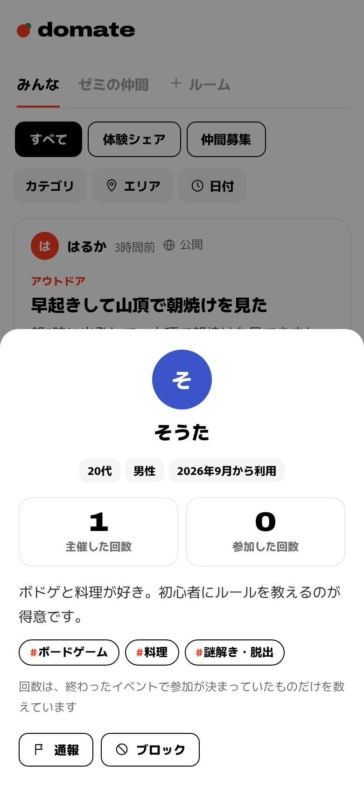
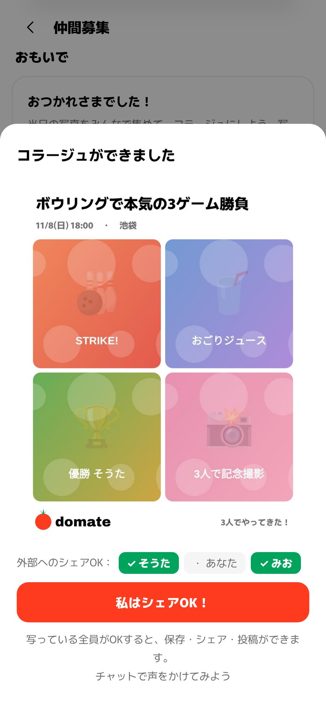
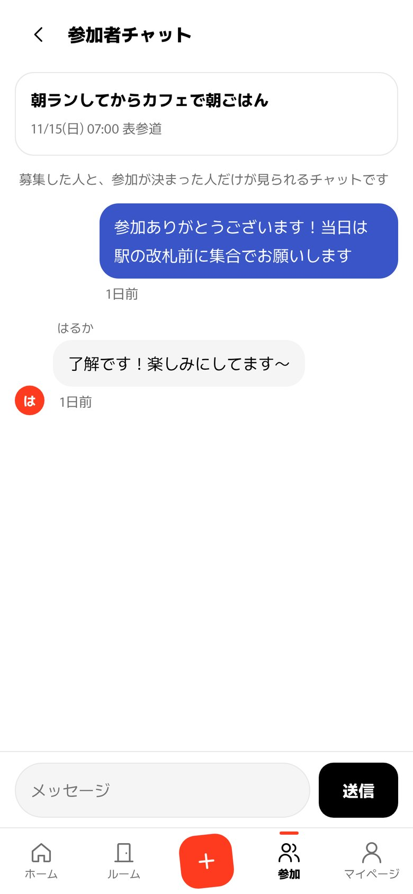

最近やった面白いことをシェアして、やりたいけど一緒にやる人がいないことは、条件をつけて仲間を募集。domate は「誘う」と「乗っかる」を気軽にするアプリです。

「今度行こう」が、
本当に行く予定になる。
行きたいお店、やってみたいこと。LINEで誘うには重いし、インスタのストーリーでは流れてしまう。domate なら、やりたい人だけが手を挙げるので、誘う側も断る側も気まずくなりません。
さがす
仲間募集は、日時・駅・人数がひと目でわかるチケットの形。カレンダーで募集がある日を確かめたり、いつもの沿線やカテゴリで絞り込んだりできます。


安心してつながる
参加は申請制。募集した人は、相手の年代や、これまでに主催・参加した回数を見てから OK できます。参加が決まった人だけのチャットで、集合場所を決めましょう。


おもいで
当日の写真を参加メンバーだけのアルバムに集めると、1枚のコラージュが自動でできあがります。写っている全員が OK したときだけ、保存や SNS へのシェアができます。

ルーム
サークル、ゼミ、地元の友達。招待リンクで入れるルームなら、メンバーにだけ見える投稿や募集ができます。ルームごとに呼ばれたい名前も設定できます。

気になる募集を探すか、やりたいことを日時と駅つきで募集します。
ひとこと添えて参加を申請。募集した人がプロフィールを見て決めます。
参加が決まったメンバーだけのチャットで、集合場所や時間を決めます。
写真をコラージュにして、体験シェアとして投稿。次のだれかの「やりたい」に。
登録時に年齢を確認しています。出会い目的・勧誘・営業での利用は禁止です。
気になる投稿や相手は、すぐに通報・ブロックできます。相手には通知されません。
募集に書くのは駅やエリアまで。細かい集合場所は、参加が決まってからチャットで伝えます。
インストール不要・ブラウザで使えます